← 返回 408 复盘中心
怎么读这一页： 正文是书上的内容，我只做了结构重排和取舍 。色块分两个维度——① 按来源：
必记结论 （书上的考点句）、
我的补讲 、
陷阱 。② 按动作：
背景 · 考试不碰 ——虚线灰块，明确告诉你哪几段可以快速划过 ；
知识串联 ——绿块，就地标出这里和后面哪一章、和《操作系统》哪个概念是同一件事 。📄 p.N 点开跳到原书对应页；紫色 考点追踪 是王道标注的真题年份。⚠️ 本章是 408 跨科枢纽的总闸 ——局部性原理、Cache 映射、页表与 TLB 和《操作系统》的内存管理是同一套机制的两种讲法 ，绿块会逐个就地点名，读到绿块请停一下把两边接上 ，那是本章最值钱的部分。另：本页凡写"复算""实测"的数字，都是我在做这 152 道题时用 Python 真算过的 ，不是抄书——包括抓出的一处书误 （见 3.5 例 3.3 的红块）。
📄 p.77
本章定位
考纲内容 ：（一）存储器的分类 。（二）层次化存储器的基本结构 。（三）半导体随机存储器 ——SRAM、DRAM、Flash 存储器。（四）主存储器 ——DRAM 芯片和内存条；多模块存储器；主存储器和 CPU 之间的连接。（五）外部存储器 ——磁盘存储器；固态硬盘（SSD）。（六）高速缓冲存储器（Cache） ——Cache 的基本原理；Cache 和主存储器之间的映射方式；Cache 中主存块的替换算法；Cache 写策略。（七）虚拟存储器 ——虚拟存储器的基本概念；页式虚拟存储器（基本原理、页表、地址转换、TLB 快表）；段式虚拟存储器的基本原理；段页式虚拟存储器的基本原理。
王道的复习提示 ：本章是历年命题重点，特别是 Cache 和虚拟存储器容易出综合题。 存储器的特点、存储器的扩展（芯片选择、连接方式、地址范围等） 、交叉存储器 、Cache 的相关计算与替换算法 、虚拟存储器与 TLB 也容易出选择题。需掌握存在 Cache 和 TLB 的计算机中的地址翻译与 Cache 映射问题 ，建议结合《操作系统》复习 。
必记结论 · 章首三问（书把答案放在 3.7，我把问题提到这里当靶子）
读之前先看一眼，读完回来自己答一遍——答不上来的那一问，就是你这一章没读透的地方 ：为何要分这些层次 ？计算机如何管理 这些层次？Cache 性能 的因素有哪些？页面是设置得大一些好还是小一些好 ？（三问的完整答案在本页最后「3.7 本章小结」，别提前翻。）
我的补讲 · 这一章的总纲只有一句话：把"慢而大"伪装成"快而大" （先看这一段再往下读）
书上说 ：存储器有
容量、速度、成本 三个互相矛盾的指标，于是采用
多级存储器结构 缓解矛盾。
潜台词是 ：
整章 71 页只干一件事——用一小块快的，去"冒充"一大块慢的。 而冒充要成立，只需要三样东西，
它们在本章出现了三遍 ：
冒充的三件套 Cache–主存层（3.5） 主存–辅存层（3.6 虚存） DRAM 行缓冲（3.2） ① 凭什么能冒充 程序局部性原理 同左 同左（连续访问同一行） ② 按什么粒度搬 块（行） ，几十字节页 ，几 KB整行 ，几 KB③ 谁来搬 / 找不到怎么办 纯硬件 ；不命中直接从主存调硬件 + 操作系统 ；缺页要中断 芯片内部电路
所以本章任何一道题，最后都能归到三个问题之一 ：
地址怎么切 （哪几位是块号、哪几位是块内偏移）、
一次要花多少时间 （命中/不命中各算一遍）、
要多少位来记这件事 （标记位、有效位、页表项）。
时间怎么分： 按真题密度，
3.5 Cache（14 真题）≈ 3.6 虚存（15 真题）＞ 3.2 主存（9）＞ 3.3 连接（6）＞ 3.4 外存（4）＞ 3.1（0） 。
但
3.3 是"最快见效"的一节 ——只有 5 页却压着 6 道真题，且题型高度固定，
一晚上能吃干净 。
配套动手 ：
练习系统第 3 章 152 题 （每题带 Python 独立复算）、
计算模板手册 ch3 条目 。
3.1 存储器概述
📄 p.78
3.1.1 存储器的分类
考点追踪：存储器的分类及特点（2011）
背景 · 考试不碰：按存储元件分类的三种介质
存储元件须具备两个可区分的稳定物理状态 。半导体器件（电荷/电压）→ 半导体存储器（DRAM、SRAM）；磁性材料（磁化方向）→ 磁表面存储器（硬盘、磁带）；光介质（反射率/相变）→ 光存储器（光盘）。这一段读一遍知道有这回事即可 ，统考从不单独考"按元件分类"，只在 3.4 讲磁盘时才需要"磁化方向"这四个字。
必记结论 · 按存取方式分类（2011 真题就考这张表）
类型 定义 特点 典型代表 随机存取存储器 RAM 任意单元可读/写，存取时间与物理位置无关 读/写灵活 主存、Cache（半导体存储器属此类） 顺序存取存储器 SAM 信息按顺序存放读出，存取时间取决于数据在介质中的位置 ，以记录块为单位编址 容量大、速度慢 磁带 直接存取存储器 DAM 兼具随机与顺序 ：先直接定位到目标区域，再按顺序读取介于两者之间 传统机械磁盘、光盘 相联存储器 CAM 按内容而非地址 存取，查找速度与存储位置无关成本高、容量小 快表 TLB 、路由表
陷阱 · "随机存取"≠"随机存储器"（2010、2011 两年真题都在这条上做文章）
书上原话（3.2 习题 11 解析）："随机存取"与"随机存储器"是两个不同的概念，只读存储器也是随机存取的。因此，支持随机存取的存储器并不一定是随机存储器。 ROM 也是随机存取的 （2010 真题：RAM 和 ROM 都采用随机存取方式，✔）。CD-ROM（光盘）不是随机存取 ，它是直接存取 ；而且书上专门强调：CD-ROM 是只读型光盘存储器，不属于只读存储器（ROM） （2011 真题的正确答案就是它）。U 盘属于 ROM 的一种 （Flash 在 E²PROM 基础上发展而来），别因为"能随便写"就归到 RAM。
我的补讲 · 为什么磁盘是 DAM 而磁带是 SAM——一句话分清这两个最容易混的类
书上说 ：磁带是顺序存取 ，磁盘是直接存取（兼具随机与顺序） 。潜台词是 ：看"能不能跳" 。磁带要读第 100 段，磁头必须从当前位置一格一格走过去 ，所以存取时间取决于当前位置到目标的距离（纯顺序 ）；磁盘要读某扇区，磁头可以直接甩到那条磁道 （随机的一步），落到磁道上以后只能等盘转到那个扇区 （顺序的一步）——两步一随机一顺序，所以叫"直接存取" 。所以能考 Z ：3.4 算磁盘存取时间时，你会看到 寻道时间 + 旋转延迟 + 传输时间——第一项就是那个"随机的一步"，后两项就是"顺序的一步" 。这里的分类不是背诵，是 3.4 那条公式的结构说明。但别把"CD-ROM"和"ROM"混为一谈 （见上面的红块）。
按信息的可更改性分类 ：可读可写存储器 / 只读存储器 ROM 。ROM 正常工作时只能读取，但某些类型（E²PROM、Flash）支持特定条件下重写。RAM 与 ROM 一样，通常都采用随机存取方式。
按信息的可保存性分类 ：易失性 （断电即丢，如 RAM）/ 非易失性 （断电仍保持，如 ROM、Flash、磁盘、光盘）。此外，若读操作会破坏存储单元中的原有信息，则称为破坏性读出 ，读出后需立即执行再生 操作以恢复数据（DRAM）；若读不改变原内容、无须再生，则称为非破坏性读出 （SRAM）。
我的补讲 · 这四种分法里，只有两条会真的出现在算式中
书上说 ：存储器按元件 / 存取方式 / 可更改性 / 可保存性 四种方式分类。潜台词是 ：四种分法在选择题里是"判断题素材" ，但真正会进入计算的只有两条——① 破坏性读出 ⟹ 决定了 Tm 可达 2Ta ，也决定了 DRAM 必须刷新 ，而刷新会和 CPU 抢访存（"死时间"）；② 相联存取（CAM） ⟹ 决定了 TLB 可以"一次全比" ，这是 3.6 里 TLB 命中只花 1 个时钟周期的物理原因。所以能考 Z ：把这两条拎出来单独记；剩下的两种分法只需能判对错（易失/非易失、可改/只读）。
知识串联 · 相联存储器 CAM 是 408 里出现次数最多的"隐形结构"
本章内 3.5 Cache ：全相联映射要把主存块号同时与所有行的标记比较 ——那就是一个 CAM。组相联"只在组内比"，就是缩小的 CAM 。本章内 3.6 TLB ：快表就是一个按虚页号内容查找 的相联存储器，所以它能一拍出结果，而页表在主存里要访存一次。数据结构 散列表 ：CAM 是"硬件版的哈希表"——都在解决同一个问题「不想线性找，就得让内容自己指出位置 」。区别是散列表用算 的（哈希函数），CAM 用并行比 的（堆硬件）。计算机网络 路由表 / 交换机 MAC 表 的硬件查找同样用 CAM/TCAM。「凡是"按内容找"，硬件上就是 CAM，代价是贵、容量小」 ——这解释了为什么 TLB 只有几十项。
3.1.2 主存储器的组成和基本操作
📄 p.78–79
考点追踪：MAR 和 MDR 位数的决定关系、寻址范围的计算（2021）
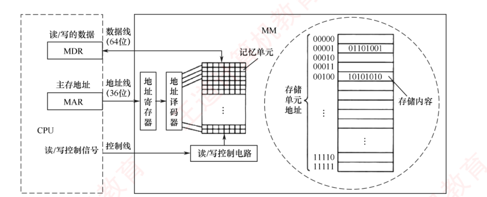
图 3.1 主存储器的基本组成框图（原书 p.79）——看图记三条线 ：数据线连 MDR、地址线连 MAR、控制线送读/写信号。右侧放大的是"地址↔内容"的对应表，这就是"编址"的全部含义。
存储矩阵（存储体、存储阵列） 由大量记忆单元（存储元） 构成，是存储器的核心部件；每个记忆单元是一个有两种稳定物理状态、能表示 0/1 的器件。存储单元 = 具有相同地址的一组记忆单元，编址单位 即指它。现代计算机普遍采用字节编址 ：每个地址对应 1 字节（8 位）。CPU 访存流程：目标地址 → MAR → 地址线 → 主存的地址寄存器 → 地址译码器 选中单元；同时 CPU 经控制线发读/写信号。写 ：数据经 MDR → 数据线 → 写入选中单元；读 ：选中单元内容 → 数据线 → MDR。
必记结论 · 两句话，年年考
⭐ MDR 的位数 = 数据线宽度；MAR 的位数 = 地址线位数。 8 个字节 （64 位 ÷ 8 位/字节）。36 位地址的寻址范围为 0 ~ 236 −1，共 236 个字节 = 64GB 。
我的补讲 · "编址单位"四个字，是本章一半计算题的总开关
书上说 ：
编址单位是指具有相同地址的一组记忆单元，称为一个存储单元。现代计算机普遍采用字节编址。
潜台词是 ：
"一个地址对应多少位"是题目规定的，不是天经地义的 8 位。 它一变，三样东西同时变——
地址线根数 、
总容量的算法 、
"跨了几个单元"的判断 。
所以能考 Z ：本章至少四道题的唯一机关就是这四个字——
题 编址单位 不看清的后果 3.3-02（80386DX） 以 4B 为编址单位 会答"字扩展"，实际只需位扩展 3.3-14（2021 真题 ） 按字编址，字长 32 位 当成字节编址会算出 8 片，实际 32 片 3.3 综 01 按字编址 会先把 4M×32 转成 16M×8，多算出 2 根地址线 3.6 的地址切分题 字节编址 块内地址位数算错，整道大题连环崩
⟹
拿到题先在"编址"两个字上画圈 ，这是本章性价比最高的一个动作。
陷阱 · 2011 真题：MAR 位数由"地址空间"决定，不由"实装容量"决定
原题 ：某机按字节编址，主存地址空间大小为 64MB ，现用 4M×8 位的 RAM 芯片组成 32MB 的主存储器 ，则 MAR 至少多少位？答案 26 位 （64M = 226 ），不是 25 位。书上把道理讲透了，这是本节最重要的一句话：实际的主存容量 32MB 不能代表 MAR 的位数，考虑到存储器扩展的需要，MAR 应保证能访问到整个主存地址空间；反过来，MAR 的位数决定了主存地址空间的大小。 "32MB"是纯干扰项 。凡题目同时给出"地址空间"和"已装容量"，MAR 一律跟前者走。
知识串联 · MAR / MDR 这两个寄存器你还会再见到三次
ch4 指令系统 指令中地址码的位数 与 MAR 位数的关系——地址码短了就得靠间接寻址/变址 去够到整个空间。ch5 CPU 数据通路里，取指令 永远是 PC→MAR→M→MDR→IR 这条固定链路；MAR/MDR 是 CPU 与主存唯一的握手窗口 ，画数据通路时少写一个就丢分。本章 3.6 虚存里，送进 MAR 的是物理地址 （已经过 MMU 翻译），CPU 里流动的是虚拟地址——这条界线是 3.6 综合题的第一步。
3.1.3 存储器的层次化结构
📄 p.79
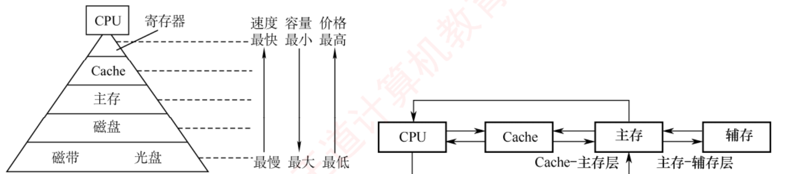
图 3.2 多级存储器结构（左） 图 3.3 三级存储系统的层次结构及其构成（右）（原书 p.79）——左图记三个箭头 ：自上而下速度变慢、容量变大、价格变低；右图记两个层 ：Cache–主存层、主存–辅存层，辅存不能直接连 CPU 。
层次化的目的：缓解容量、速度、成本 三者的矛盾。
两个关键层次：Cache–主存层 与 主存–辅存层 。Cache 和主存可直接与 CPU 交换信息；辅存需通过主存间接与 CPU 通信 ；主存是枢纽。
核心思想：上一层存储器作为下一层的高速缓存 。CPU 访问数据时按 Cache → 主存 → 辅存 逐级查找；若不在上层，则从下层逐级调入（先从磁盘读入主存，再从主存加载到 Cache）。
从 CPU 视角：Cache–主存层的速度接近 Cache，而容量与单位成本接近主存 ；主存–辅存层的速度接近主存，而容量与单位成本接近辅存 。
必记结论 · 两层机制的目标与实现方式（这张表几乎年年在选择题里被拆开考）
层 解决什么问题 数据调度由谁完成 对谁透明 Cache–主存层 CPU 与主存速度不匹配 硬件自动完成 对所有程序员 透明 主存–辅存层 主存容量不足 硬件与操作系统协同完成 仅对应用程序员 透明
随着主存–辅存层不断发展，逐渐形成了
虚拟存储系统 ：程序员使用的虚拟地址空间
远大于实际主存容量 。
📕
书上的注意框 ：在两层结构中，
上一层的内容始终是下一层内容的子集副本 ——Cache 中的数据来自主存，主存中的数据来自辅存。
我的补讲 · "对谁透明"这一栏是整张表唯一会失分的地方
书上说 ：Cache–主存层对所有程序员透明 ，主存–辅存层仅对应用程序员透明 。潜台词是 ："透明"= 你写代码时不需要知道它存在 。Cache 完全由硬件管，没有任何一条指令能直接操作某一行 Cache ，所以对谁都透明；而虚存要靠页表 + 缺页中断 ，这两样都是操作系统写的代码，系统程序员必须知道它存在 （他就是写这段代码的人），所以只对应用程序员透明。所以能考 Z ：3.1 习题 10 的说法 Ⅱ「虚拟存储器中主存和辅存之间的数据调动对任何 程序员是透明的」——错在"任何"两个字 。这类题只改一个词，读题必须逐字。
知识串联 · 这张表就是《操作系统》内存管理那一章的引子
操作系统 "主存–辅存层由硬件与操作系统协同 完成" —— 展开来就是 OS 的请求分页 ：硬件负责地址转换和产生缺页异常 ，OS 负责换入换出、页面置换算法、写回磁盘 。408 的综合题最爱把这条界线画出来问你「这一步是谁做的」。操作系统 "Cache 由硬件全权管理" —— 所以 OS 课本里没有 "Cache 管理"这一节，但有"页面置换算法"一整节。两边替换算法名字一样（LRU/FIFO），归属完全不同 ：Cache 替换是电路，页面置换是代码。「谁来搬」的答案变了，题目的问法就跟着变 。
我的补讲 · "Cache 没有增加主存容量"——这句话是 3.1 习题里最爱考的一句
书上说 （习题 08 解析）：Cache 中的内容只是主存内容的部分副本（拷贝），并未增加主存容量。 潜台词是 ：两层结构的"收益"完全不同——Cache 层买的是速度，虚存层买的是容量，两者不能互换。 Cache 是副本 （主存里还有一份），虚存是搬家 （页真的不在主存里，在磁盘上）。所以能考 Z ：主存与 CPU 速度不匹配 （不是容量）；Cache 容量通常大于主存 "——Cache 远小于 主存；错 ——CPU 与主存可直接交换信息 （图 3.3 里 CPU 到主存有直接的箭头）。不能直接访问硬盘 」；习题 06「存储系统包括寄存器、Cache、主存和外存 」（寄存器也算 ，很多人漏掉）。
知识串联 · 分层这件事，ch1 已经用另一个名字讲过一次
ch1 1.2 计算机系统的层次结构 （高级语言→汇编→机器语言→微程序→硬件）与本节的存储器层次结构 ，用的是同一种思维 ：上层向下层借实现，下层对上层隐藏细节 ，中间靠"透明"两个字划界。ch1 1.3 CPU 执行时间 = 指令数 × CPI × 时钟周期 ——本章讲的一切（Cache 命中率、缺页率）最终都是通过拉高实际 CPI 来影响性能的。3.5 会给出 AMAT（平均访问时间），那就是把访存代价折进 CPI 的桥 。本章是在给 ch1 的 CPI 补一个"存储器修正项" 。
3.1.4 存储器的主要性能指标
📄 p.79–80
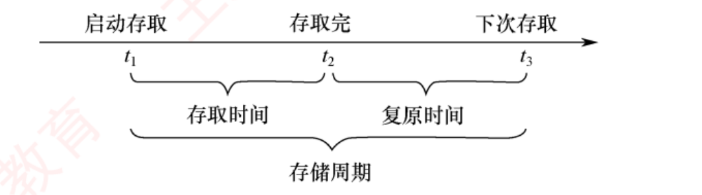
图 3.4 存取时间与存储周期的关系（原书 p.80）——t1 →t2 是存取时间，t2 →t3 是复原时间，t1 →t3 才是存储周期 。这张时间轴一裁就懂，用文字要绕三句。
必记结论 · 三个指标的定义与关系（3.1 唯一进算式的内容）
① 存取时间 Ta ：完成一次读/写操作所需的时间。读出时间 = 从主存接收到有效地址 到数据有效输出 ；写入时间 = 从接收到有效地址到数据成功写入指定单元 。② 存储周期 Tm ：存储器进行连续两次独立的读/写操作所需的最小时间间隔 。Tm = Ta + Tr ＞ Ta （Tr 为复原/恢复时间）。对破坏性读出 的存储器（DRAM），读出后必须立即再生，Tm 甚至可达 2Ta 。③ 存储器带宽 ：每秒能传输的最大数据量。书例：存储周期 50ns、每周期传 64 位 ⟹ 理论带宽 = 64b / 50ns = 1.28Gb/s 。实际系统常组织为多模块结构 ，总带宽提升至单模块的若干倍。
我的补讲 · 带宽算式里的分母永远是 Tm ，不是 Ta ——这是本节唯一的算错点
书上说 ：存储周期是连续两次独立读/写所需的最小间隔 ，带宽 = 每秒能传输的最大数据量 。潜台词是 ："连续两次"这四个字，就是在告诉你"稳态下多久能出一个数据" 。而带宽问的正是稳态吞吐，所以分母只能是 Tm 。Ta 只回答"第一个数据什么时候到"（延迟），不回答"每秒能出几个"（吞吐）。所以能考 Z ：3.1 习题 02 的四个选项就是把 Ta 和 Tm 的定义互换来考，选项 D「一次读/写操作所需的平均时间」说的是存取时间 ，不是存取周期。延迟看 Ta ，吞吐看 Tm ；这对概念在 ch5 流水线里会以"一条指令的执行时间 vs 每条指令的平均耗时"原样重演。
陷阱 · 本章第一处单位陷阱：8×106 B/s ≠ 8MB/s
3.1 习题 11 ：存取周期 250ns，每次读出 16 位，数据传输速率是多少？−9 s = 8×106 B/s （🐍 复算：2/250e-9 = 8.0e6 ✔）。C. 8×106 B/s 和 D. 8×220 B/s ——后者才是"8MB/s"。本章通篇的铁律：容量用 210 （K/M/G），速率与带宽用 103 。 题目里一旦出现"KB/s、MB/s"，先看它是十进制还是二进制（3.2 综合 01 那道刷新带宽题，书上专门加括号写明"其中 1K = 1000"）。
背景 · 考试不碰：3.1 有多"轻"，心里要有数
3.1 全节 5 页、11 道习题、0 道统考真题 ——它是全章唯一零真题的一节。它的价值不在自己能出题，而在后面五节的每一句话都用它的词汇写成 （存取周期、带宽、层次、透明、破坏性读出）。读法建议 ：本节只需死记两处——Tm = Ta + Tr 与 MAR/MDR 位数 （上面两个黄块），其余通读一遍能判对错即可，不要在这一节花第二个小时 。
3.2 主存储器
📄 p.82
3.2.1 半导体随机存取存储器（SRAM / DRAM）
RAM 分为静态 RAM（SRAM） 和动态 RAM（DRAM） ，二者均为易失性存储器 。现代计算机中，主存主要采用 DRAM，而 Cache 使用 SRAM 。
必记结论 · SRAM 与 DRAM 的工作原理（一句话各一条）
SRAM ：存储元基于双稳态触发器（六晶体管 MOS） ，用电路的两个稳定状态表示 0/1。"静态"体现在读操作为非破坏性读出，因此无须再生 。速度快，但集成度低、功耗较大、成本高 ，用于高速缓冲存储器。DRAM ：利用栅极电容上的电荷 存储信息（有电荷为 1，无电荷为 0），基本存储元仅由一个晶体管和一个电容构成 ，结构简单、集成度远高于 SRAM。代价是存取速度较慢 、电荷会漏电所以必须定时刷新 、且读出过程为破坏性读出，需读后立即再生 。
必记结论 · 表 3.1 SRAM 和 DRAM 的比较（八行全部要能背出来）
特点 SRAM DRAM 存储信息靠 触发器 电容 破坏性读出 非 是 需要刷新 不需要 需要 送行列地址 同时送 分两次送（地址引脚复用） 运行速度 快 慢 集成度 低 高 存储成本 高 低 主要用途 高速缓存 主机内存
我的补讲 · 这张表只有第 4 行会进算式，其余七行都是判断题素材
书上说 ：
SRAM 行列地址同时送，DRAM 分两次送 。
潜台词是 ：
"分两次送"= 地址引脚数直接砍一半 。这一条把一张"背诵表"变成了一道
计算题的入口 ——凡问 DRAM
引脚数 ，一律先算总地址位数再
÷2 。
所以能考 Z ：三道题被同一根线串起来，
务必成组做 ：
题 芯片 地址引脚 数据引脚 总数 3.2-01（SRAM） 1024×8 位 SRAM 10（不复用 ） 8 18 3.2-09（DRAM） 1024×8 位 DRAM 10÷2 = 5 8 13 3.2-32（2014 真题 ） 4M×8 位 DRAM 22÷2 = 11 8 19 3.2-37（2022 真题 ） 8192×8192×8 位 26÷2 = 13 8 —
⚠️ 2014 题干里的"某容量为
256MB 的存储器"是
纯干扰 ——
引脚数只看单片规格，与总容量无关 。书上原文也点了这句：
这是很多考生容易忽略的地方 。
陷阱 · "易失性"和"要不要刷新"是两件事（习题 05 就靠这条送分）
SRAM 和 DRAM 都是易失性的 ——断电都丢。它们的区别不在易不易失，而在"通电时要不要动态刷新"。 半导体 RAM 是易失性 RAM，但只要电源不断电，所存信息是不丢失的 ；错误项是"DRAM 是易失性，SRAM 是不易失的"。断电全丢（易失性）是 RAM 的共性；通电还得反复救（刷新）是 DRAM 的个性。
我的补讲 · 存储元 / 存储单元 / 存储体：三个词的层级，一次分清
书上说 ：记忆单元（存储元）→ 具有相同地址的一组记忆单元构成存储单元 → 存储单元的集合构成存储体（存储矩阵）。 潜台词是 ：这是一条严格的包含链，而"编址"发生在中间那一层 ——地址指向存储单元 ，不指向存储元，也不指向存储体。所以能考 Z ：习题 07 的错误项是"同一个存储器中，每个存储单元的宽度可以不同 "——必须相同 ，因为地址译码器一次选中的就是一整行固定宽度的位。宽度可变，"容量 = 单元数 × 字长"这条式子就不成立了 ，而本章所有容量计算都建立在它上面。存储元只存 1 bit （习题 07 的 D 项，对的）。
存储芯片的组成
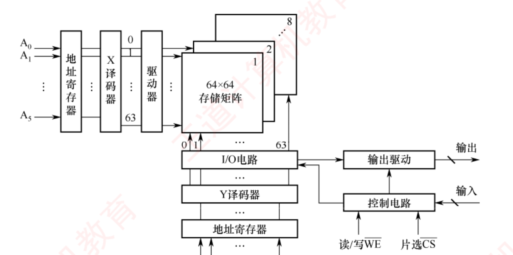
图 3.5 存储芯片结构图（原书 p.83）——地址寄存器 → X 译码器 → 驱动器 → 64×64 存储矩阵（8 个位平面）→ I/O 电路 → 输出驱动；Y 译码器与控制电路接收读/写 WE 与片选 CS 。看这张图只为记住五个部件 ，引脚走线不必细究。
存储体（存储矩阵） ：存储单元的集合，通过行选择线（X）和列选择线（Y） 共同选中目标单元。位于相同行列交叉点上的多个位（位平面数） 被同时读/写。地址译码器 ：将输入地址转换为译码输出线上的高电平信号，驱动相应读/写电路。I/O 电路 ：控制被选中存储单元的读/写，具有放大信号的作用。片选控制线 ：单芯片容量有限，需多芯片组合扩展；访问某存储字时必须"选中"其所在芯片，其他芯片不被选中。读/写控制线 ：根据 CPU 发出的读/写命令，对选中单元执行相应操作。
背景 · 考试不碰：单译码法 vs 双译码法
单译码法（一维译码） 仅用一个行译码器，同一行中所有存储元件的字线相连构成一个字，可同时读/写，缺点是译码器输出线数量过多 ；双译码法（二维译码） 把地址译码器分为 X（行）和 Y（列）两部分，行列交叉点唯一确定一个存储单元，这是当前 DRAM 芯片普遍采用的译码结构 。知道结论"现在都用双译码"即可 ，统考不考译码器内部；但"行 × 列"这个二维观念要留下 ，下面算刷新、行缓冲、行列设计三条约束全靠它。
DRAM 芯片的关键技术（1）地址引脚复用
考点追踪：DRAM 芯片地址引脚复用技术（2014）
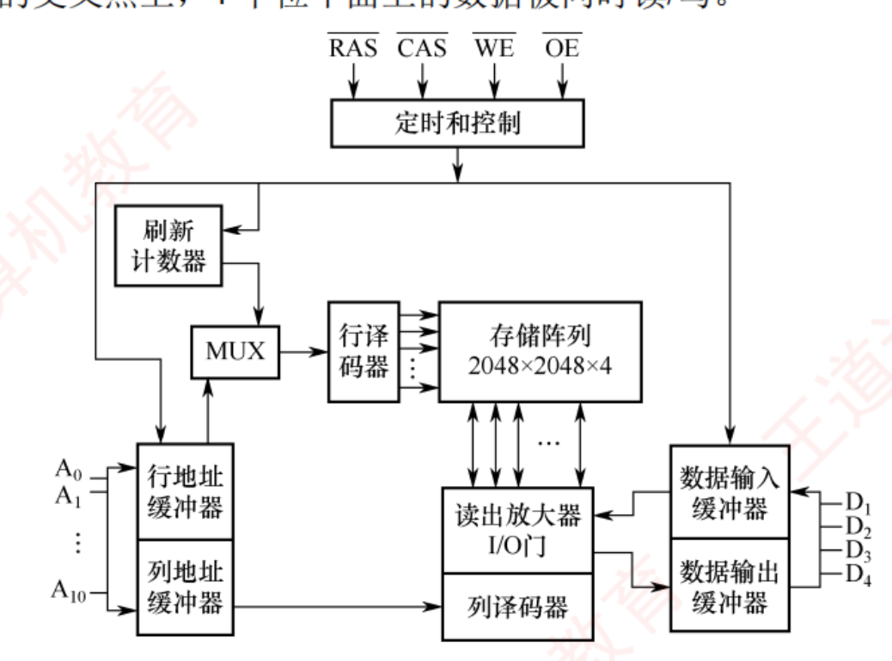
图 3.6 一个 4M×4 位 DRAM 芯片的逻辑结构图（原书 p.83）——四个要看的地方 ：① 左侧 A0 ~A10 只有 11 根，行/列地址缓冲器分时复用；② 刷新计数器 经 MUX 与行地址共用通往行译码器的通路；③ 存储阵列标着 2048×2048×4；④ 右侧 D1 ~D4 是 4 个数据引脚（4 个位平面同时读/写）。
该芯片共 11 个地址引脚（A0 ~A10 ） ，在行选通信号 RAS 和列选通信号 CAS 控制下分时复用 传送行地址和列地址。
数据端口有 4 个引脚（D1 ~D4 ） ，每个芯片可同时读/写 4 位数据。
WE OE 芯片内部存储阵列采用三维结构 ，总容量为 2048×2048×4 位，即 4M×4 位 ；行地址与列地址各需 11 位 ，共 4 个位平面 。
地址引脚复用技术 ：DRAM 容量大、所需地址位数多，为减少引脚数量，行地址和列地址通过相同引脚分两次先后输入 ，使地址引脚数量减少一半 。
必记结论 · DRAM 容量的三种问法（3.2 习题 20/21 与 2022 真题的公式来源）
⭐ DRAM 芯片容量 = 位平面数 × 行数 × 列数 （等价于"存储单元数 × 每单元位数"）。行缓冲器容量 = 列数 × 每个存储单元的位数 （即"一整行的数据量"）。刷新计数器位数 = 行地址位数 （它要能数遍所有行）。习题 20 ：16 片 DRAM，每片 4 个位平面、每平面 4096×4096 ⟹ 单片 4096×4096×4 b = 8MB，内存条 = 128MB （🐍 复算 ✔）。习题 21 ：4M×4 位 DRAM ⟹ 22 位地址、引脚 11 根、刷新计数器 11 位、行缓冲器 = 2048 列 × 4 位 = 8Kb （选项说 2Kb 是错的，🐍 复算 ✔）。习题 19 ：DRAM 每增加 1 根地址引脚，行、列地址各增加 1 位 ⟹ 行数与列数各翻倍 ⟹ 容量至少变为原来的 4 倍 。
我的补讲 · "位平面"是本章唯一的三维概念，想清楚它，容量题不会再算错
书上说 ：芯片内部存储阵列采用三维结构，总容量为 2048×2048×4 位，即 4M×4 位；在任意行与列的交叉点上，4 个位平面上的数据被同时读/写。 潜台词是 ：把芯片想成一摞纸 ——每张纸是一个位平面 （2048 行 × 2048 列，每格 1 bit），共 4 张摞在一起。一个地址（行,列）在每张纸上各戳一个洞，同时取出 4 位 ，这 4 位就是"字长 4 位"。行数×列数 = 存储单元数（4M） ，位平面数 = 每个单元的位数（4）= 数据引脚数 ，总容量 = 行 × 列 × 位平面 。所以能考 Z ：习题 20（4096×4096×4 的 16 片 = 128MB）、习题 21（行缓冲 = 列数 × 位平面数 = 2048×4 = 8Kb）、2022 真题（8192×8192×8）——三道题问的都是"这三个数你分得清吗" 。行缓冲器 ：它装的是一整行 ，所以是 列数 × 每单元位数 ，不是行数、也不是整个芯片容量 。
（2）刷新机制与阵列设计优化
📄 p.84
考点追踪：DRAM 芯片行、列设计优化原则（2018）
刷新时，仅向芯片提供行地址和 RAS 信号 ，即可选中某一行的所有存储单元并执行读操作。
由于破坏性读出，每次读取后必须立即再生：读出 0 → 将电容充分放电；读出 1 → 重新充电 。
对 2048×2048×4 的阵列，只需进行 2048 次刷新操作 即可完成全芯片刷新（刷新按整行进行，无须列地址 ）。
芯片内部集成一个刷新计数器 自动产生刷新所需的行地址，其位数与行地址位数相同 ；行地址缓冲器与刷新计数器通过一个多路选择器（MUX） 共享通往行译码器的地址通路。
刷新周期 ：对某一特定行完成一次刷新后，到下一次对该行再次刷新的时间间隔。
必记结论 · 行列设计三条约束（2018 真题的完整解法就是这三句）
设芯片容量 2n ×b 位，存储阵列行数为 r、列数为 c，则 2n = r×c ，n = log2 r + log2 c 。① 地址引脚数由行、列地址位数中的较大者 决定 ⟹ 为最小化地址引脚数，应使 r 与 c 尽可能接近 ；② DRAM 按行刷新，行数越少刷新开销越低 ⟹ 还需满足 r ≤ c ；③ 综合 ⟹ 通常把阵列设计为行数略小于或等于列数的近似正方形结构 。2018 真题现场 ：2K×1 位 DRAM，四个选项 (2048,1)、(64,32)、(32,64)、(1,2048)。先用 ① 排除 A、D（引脚要 11 根）；B、C 都只要 6 根，再用 ② 选行数少的 ⟹ C. r=32, c=64 。
我的补讲 · 为什么"行数少"能省刷新开销——想通这一句，2018 那题不用背
书上说 ：DRAM 按行刷新，行越少，刷新开销越低 。潜台词是 ：刷新的工作量 = 行数，而与列数无关 ——因为一次刷新整行一起再生 ，列多不额外收费。所以在"总容量 r×c 固定"的约束下，把格子做得"扁"（行少列多）就是白赚 。而引脚数由 max(log₂r, log₂c) 决定，又要求两者别差太远。两个要求一起写下来就是 r ≤ c 且 r ≈ c 。所以能考 Z ：命题人只要给四组 (r,c) 让你选，永远是先用"引脚最少"砍掉极端的两组，再用"r ≤ c"在剩下的两组里定胜负。这道题的解法是固定的两步，不是算出来的。 刷新会和 CPU 访存冲突，产生访存"死时间" ——刷新本身就是一次读，要占存储器 ，不可能"不影响 CPU"。
陷阱 · 刷新的四个高频判断（习题 03/14/17/18 全在这里）
① 刷新以"行"为单位 （不是存储单元、不是列、不是存储字）。只占用一个存取周期 ，不是两个。书上讲得很细：刷新时的"读"并不是把信息读入 CPU，它只是把信息读出，通过一个刷新放大器后又重新存回存储单元，而刷新放大器是集成在 RAM 上的，因此这里只进行了一次访存 。"读但不输出数据"的假读 ，目的是给存储电容重新充电；刷新会与 CPU 访存冲突，会有访存"死时间" 。SDRAM 也是 DRAM 的一种，同样需要定期刷新 （2015 真题：需要周期性刷新的是 SDRAM ，不是 SRAM/ROM/Flash）。是错的 ——刷新是按原存内容重新写入一遍 ，内容不变。
（3）缓存机制与突发传输
考点追踪：DRAM 芯片行缓冲器容量的计算（2022）
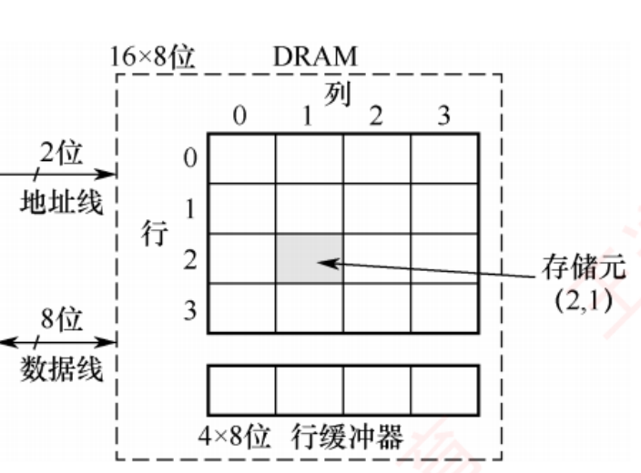
图 3.7 一个 DRAM 芯片的简化示意图（原书 p.84）——容量 16×8 位、阵列 4 行×4 列：地址线只有 2 根 （分时传 2 位行地址 + 2 位列地址），数据线 8 根 （每个存储单元 8 位），下方 4×8 位的行缓冲器 正好装下一整行。
芯片内部设有一个行缓冲器（通常由 SRAM 实现） ，用于缓存被选中行中所有列的数据。
⭐ 行缓冲器容量 = 一行中所有存储单元的数据总量 = 列数 × 每个存储单元的位数 （图中 4 列×8 位 = 32 位）。
某一行被选中后，该行全部数据被一次性加载到行缓冲器 ，后续可在每个时钟周期连续输出一个存储单元的数据，从而支持突发传输 （寻址阶段提供首地址，随后连续读取多个相邻存储单元），显著提升有效带宽。
知识串联 · 行缓冲器是"局部性原理"在芯片内部的第一次现身
本章 3.5 行缓冲器一次搬一整行 、后续访问同一行就便宜——这和 Cache 一次搬一整块（行） 、后续访问同一块就命中，是同一个赌注 ：赌你接下来要访问的地址就在附近（空间局部性 ）。本章 3.6 虚存一次调入一整页 ，同理；3.4 磁盘 一次读一整个扇区/磁道，同理。ch6 总线 突发（burst）传送 ：给一个首地址、连续传多个数据，总线那一章会再讲一遍；本章 3.5 习题 23/24 的"80 周期 vs 17 周期"就是它带来的差距。一句话贯穿全章：所有存储层次都在"批发"，从不"零售"。 知道这句，就能预判每一级"搬运单位"叫什么名字（行缓冲 / Cache 行 / 页 / 扇区）。
背景 · 考试不碰：SDRAM 与异步 DRAM 的对照（只需能判对错）
异步 DRAM ：CPU 发出地址和控制信号后必须等待一段不确定的延迟 ，期间 CPU 不断轮询存储器状态信号、无法执行其他任务 。SDRAM（同步 DRAM） ：读/写操作与系统时钟同步 ，把 CPU 发出的地址和控制信号锁存 ，在预设的若干时钟周期后返回数据；CPU 无须等待，可在延迟期间执行其他指令。连续访问同一行（页）内的数据时可实现突发传输，显著减少甚至避免插入等待状态 。只出判断题 （2015 真题问"谁需要刷新"、习题 18 问"SDRAM 是否需要刷新"），不出计算题 ，读一遍记住"SDRAM 仍是 DRAM、仍要刷新、行缓冲用 SRAM"三句即可。
3.2.2 非易失性存储器
📄 p.85
考点追踪：RAM 和 ROM 的区别（2010）；Flash 存储器的特点（2012）
必记结论 · ROM 与 Flash 的四条考点
① RAM 与 ROM 均支持随机访问 ，但 ROM 属于非易失性存储器 ，两个显著优点：结构简单、位密度高于 SRAM 等可读写存储器；断电后数据不丢失、可靠性高。② 主存由 RAM 和 ROM 共同构成，两者统一编址 （习题 06 的正确答案就是"不可以统一编址"这句话错了 ）。③ EPROM 可多次改写，但每次擦除需紫外线照射整片芯片，擦写次数有限、写入速度慢 ，难以满足主存对高速随机读/写的需求，因此无法替代 RAM 。④ Flash 在 EPROM 基础上发展而来 ，兼具 ROM 与 RAM 的部分优点：断电信息长期保存；支持电擦除与在线重写，无须紫外线等特殊设备 ；⭐ 读取速度接近 RAM，但写入速度显著较慢，读/写性能不对称 。
我的补讲 · Flash "写得慢"的真正原因，书只在习题解析里说了一次
书上说 （习题 16 解析）：写入和擦除必须以块为单位进行，且需要先擦除再写入，因此写速显著慢于读速。 潜台词是 ：Flash 的写不是"改一位"，是"先把整块清干净再重填" 。这一条同时解释了三件事——为什么写比读慢 （一次写要付整块擦除的钱）；② 为什么有寿命上限 （擦除次数有限，SSD 的"写入寿命"由此而来）；③ 为什么 SSD 需要"磨损均衡" （3.4 会讲，OS 的文件系统也会碰）。所以能考 Z ：2012 真题的错误项就是"读、写速度一样快 "；而 D 项"采用随机访问方式，可替代计算机外部存储器"是对的 ——Flash 既随机访问，又确实做成了 SSD 顶替机械硬盘。它是 ROM 的一种 （U 盘、BIOS、SSD 全在这一族）。
背景 · 考试不碰：ROM 的品种谱系与 BIOS 的历史
按制造工艺与可编程性分为掩模式 ROM（MROM） （厂商固化、用户不可更改）、一次可编程 ROM（PROM） 、可擦除可编程 ROM（EPROM） 。系统启动所需的 BIOS 早期固化在 MROM 或 EPROM 中无法更新，现代主板普遍采用 Flash 存储 BIOS ，用户可直接在系统中擦除并重写。这些名字只要能认出、不要求分辨细节 ；真正会考的只有 EPROM 不能当 RAM 用 （习题 13）与 Flash 是 ROM 家族 （习题 11）两条。
知识串联 · ROM 与 RAM"统一编址"，是 ch7 那道分水岭的第一次预演
本章 3.3 主板上的 ROM（BIOS）和内存条上的 RAM 共用同一套主存地址空间 ——所以 2009、2016 两道真题才会给你"64KB 里有 4KB/8KB 是 ROM 区"这种题面，要你先把 ROM 区扣掉再算 RAM 芯片数 。ch7 I/O 统一编址 vs 独立编址 ：I/O 端口若与主存统一编址 ，就要从主存空间里割一块给设备，用访存指令即可访问端口 ；若独立编址 则要专门的 I/O 指令。这里 ROM/RAM 的统一编址，就是那套讨论的最小版本。 操作系统 内存布局里"内核区 / 用户区 / 保留区"的划分，同样是在一个线性地址空间里切段 。看到"某某区占多少"，动作永远是：先算总空间，再扣掉不属于问题的那一段。
固态硬盘（SSD） 基于 Flash 构建，由控制单元和存储单元（Flash 芯片阵列） 组成，继承 Flash 的非易失性、无机械部件、读取速度快等特性。相比传统硬盘：读/写速度快、功耗低、抗震性强；缺点是价格较高，且写入寿命受限于 Flash 的擦写次数 。（详见 3.4.3 。）
3.2.3 多模块存储器
📄 p.85–87
多模块存储器是一种空间并行技术 ，通过多个结构完全相同的存储模块并行工作来提高存储器吞吐率。动机：CPU 速度远高于存储器，若能在一个存取周期内连续获取多条指令或多个数据字，可更充分利用 CPU 资源。按模块间地址分配方式分为连续编址 和交叉编址 两种结构。
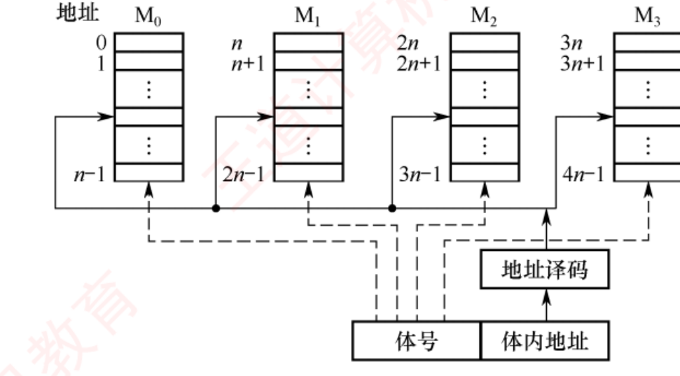
图 3.8 连续编址 （高位交叉）——注意最下方的字段顺序是「体号｜体内地址 」，即体号在高位 。
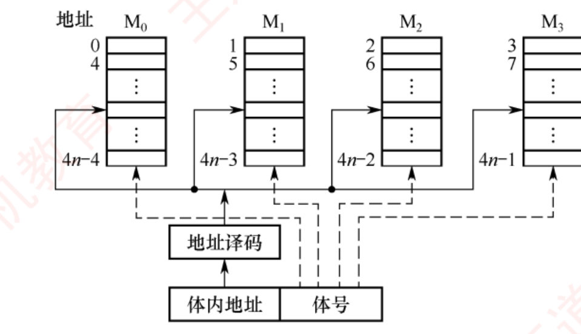
图 3.9 交叉编址 （低位交叉）——最下方字段顺序反过来是「体内地址｜体号 」，即体号在低位 。
必记结论 · 两种编址方式（把图翻译成一句可算的话）
连续编址（高位交叉） ：高位地址为模块号（体号），低位地址为模块内地址 。4 个模块 M0 ~M3 、每模块 n 个单元 ⟹ M0 存 0~n−1，M1 存 n~2n−1，……。访问一个连续主存块时总是先在一个模块内访问完才转到下一个，各模块不能并行访问，因此无法提高吞吐率 。书上的注意框 ：模块内的地址是连续的，存取方式仍是串行存取，因此这种存储器本质上仍属于顺序存储器 。交叉编址（低位交叉） ：低位地址用作模块号，高位地址作为模块内地址 。设 m 个模块、每模块 k 个单元，则 ⭐ 模块编号 = 单元地址 % m 。连续地址的数据被依次分布到不同模块，物理上"交叉存放"，访问连续地址时能显著提高吞吐率 。
我的补讲 · "体号放高位还是低位"这四个字，能把同一道题的答案完全翻过来
书上说 ：连续编址体号在高位，交叉编址体号在低位。
潜台词是 ：
体号取地址的哪一段，就决定了"相邻地址会不会落在同一个体里" ——取高位则相邻地址
挤在同一个体 （不能并行），取低位则相邻地址
被摊开到各个体 （可以流水）。
所以能考 Z ：
3.2 习题 25 与 3.3 习题 11（2010 真题）是同一道题的两个方向，必须成对做 ——
题 编址方式 片选取哪几位 问"该地址所在芯片的最小地址" 3.2-25 ：4 片 16K×8 组成 64K×8，问 BFFFH交叉编址 最低 2 位 ，高 14 位为片内地址BFFFH 低两位 = 11 ⟹ 该片最小地址 0003H 3.3-11（2010） ：8 片 2K×4 组成 8K×8，问 0B1FH连续编址 高位 译码，低 11 位为片内地址2847 ÷ 2048 = 第 2 组 ⟹ 该组最小地址 0800H
只差"编址方式"四个字，一个答案是 0003H，一个是 0800H。 做题第一步永远是
先在题干里找这四个字 ；找不到就看它有没有说"片选由低位确定"。
知识串联 · "地址 % m"这个动作，本章还会再用三次
本章 3.5 Cache 直接映射 ：Cache 行号 = 主存块号 mod Cache 行数——取的也是低位 ，理由一模一样：让相邻的块摊开、不互相踢。本章 3.5 组相联 ：组号 = 块号 mod 组数，同一手法。数据结构 散列表的除留余数法 H(key) = key mod p——连"为什么模数取质数/2 的幂"的讨论都对得上：都是在防"同余的东西全撞进一个桶" 。低位交叉里的"访存冲突"就是散列表里的"哈希冲突"。看到 % 就想"我是在把东西摊开还是堆起来" ，这句话能同时解决 3.2-34（2015 真题）与 3.5 的映射题。
交叉存储器的两种启动方式
考点追踪：交叉存储器中数据的存放方式（2017）；交叉存储器存取时间和带宽的计算（2012、2013）；交叉存储器中访存冲突的分析（2015）
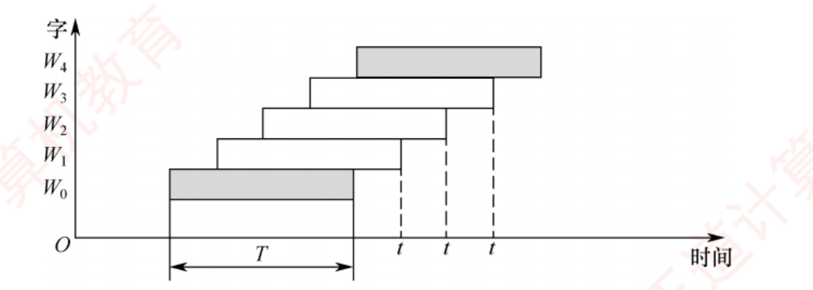
图 3.10 低位交叉轮流启动的存取时间示意图（原书 p.87）——这张阶梯图是理解 t1 = T + (m−1)r 的唯一直观依据 ：每个矩形是一个模块占用 T 的时间，彼此错开 r；第一个字要等满一个 T，之后每隔 r 出一个 ，所以 m 个字总共 T + (m−1)r。
我的补讲 · 先判"哪种启动方式"，再套公式 ——书把判据分散在两处，这里合并成一句
书上说 ：轮流启动的前提是
每个模块一次读/写的位数正好等于数据总线位数 ；同时启动的前提是
所有存储模块一次并行读/写的总位数恰好等于数据总线宽度 。
潜台词是 ：
两句话只差一个"总"字，但判据是同一个——拿"单模块位宽"去比"总线宽度" ：
比一比 启动方式 一个存取周期发生什么 典型题 单模块位宽 = 总线宽度 轮流启动 （流水线）各模块错开 r 依次启动 ，稳态每 r 出一个字 习题 22/23/24、综合 03/04 单模块位宽 × 模块数 = 总线宽度 同时启动 所有芯片同一拍一起读同一行 ，凑满一次总线传输 2017 真题 、2022 真题 、习题 28
所以能考 Z ：
2017 真题 （4 片×8 位 = 32 位 = 总线宽度 ⟹ 同时启动 ⟹ 数"跨几行"）与
习题 23 （每模块 32 位 = 总线宽度 ⟹ 轮流启动 ⟹ 一个存取周期出 4×32 = 128 位）
题面像得几乎一样，判据一变，问法完全不同 ：
同时启动数"行数"，轮流启动数"时间"。
⚠️
不要背"同时启动 = 一次 8 字节" ——书例是 64 位总线才 8 字节；
2017 那题 32 位总线，一次只有 4 字节 。
块有多大由总线宽度决定。
必记结论 · 轮流启动（这是 3.2 唯一必须背死的两条公式）
若每个模块一次读/写的位数正好等于数据总线位数 ，模块存取周期为 T 、总线周期为 r ，则实现轮流启动方式，交叉模块数应满足 ⭐ m = T / r （更严格是 m ≥ T/r ，即 模块数 × 总线周期 ≥ 存取周期 ，见习题 22）。存取速度提高 m 倍 。交叉方式连续存取 m 个字：t1 = T + (m − 1)r 顺序方式连续读取 m 个字：t2 = mT 带宽 = 数据总量 ÷ 用时 。综合 03 标准模板：T = 200ns、r = 50ns、m = 4、字长 64 位 ⟹ q = 256 位；t1 (顺序) = 800ns、t2 (交叉) = 200 + 3×50 = 350ns；W = 256/8×10−7 = 32×107 b/s vs 256/3.5×10−7 ≈ 73×107 b/s （🐍 复算 ✔，书取整）。
我的补讲 · m ≥ T/r 为什么是"≥"不是"="——一句话：模块少了流水线会断
书上说 ：交叉存储器要求其模块数大于或等于 m，以保证启动某模块后经过 mr 的时间后再次启动该模块时，其上次的存取操作已经完成（以保证流水线不间断）。 潜台词是 ：把 m 个模块排成一圈轮流用，转一圈的时间是 m×r；而一个模块被用完后需要 T 才能再次可用。 要想转回来时它已经空出来，就必须 m·r ≥ T 。所以能考 Z ：习题 22 给 T = 110ns、r = 10ns，问体数 ⟹ m ≥ 11 ，答案是"大于或等于 11 "而不是"等于 11"。四个选项里同时放了"等于 11"和"大于等于 11"，就是为了抓这个"≥"。 顺带一提，这条式子和 ch5 流水线是同一个式子 ：模块 = 流水段，T = 一段的处理时间，r = 时钟周期。"发射间隔 × 段数 ≥ 单段时延" ，两章一模一样。
知识串联 · t1 = T + (m−1)r 就是流水线公式，你在 ch5 会原样再见一次
ch5 CPU 指令流水线连续执行 n 条指令的时间：T总 = (k + n − 1) × Δt （k 段、每段 Δt）。把"第一个要等满整条流水线，之后每拍出一个"这句话写成式子，就是这里的 T + (m−1)r 。ch6 总线 突发传送的时间计算：首地址一次 + 后续每拍一个 ，同构。本章 3.2 综 02 那道"0.1μs 内能否提供 32 位"的争议题，争的正是"稳态"还是"冷启动" ——流水线充满后每 r 出一个字（说法成立），但从头算起第一个字要等满 T（说法不成立）。书答两句自相矛盾，做题时按"稳态"理解并把两种情形都写出来。
我的补讲 · 交叉存储器到底快了几倍？——不是 m 倍 ，这是最容易脱口而出的错答
书上说 ：
每隔 1/m 个存取周期就可读/写一个数据，存取速度提高 m 倍 ；又给了
t1 = T + (m−1)r 与
t2 = mT。
潜台词是 ：
"提高 m 倍"说的是稳态吞吐 ，而 t1 /t2 算的是连续取 m 个字的总时间 ，两者的比值并不等于 m ：
t2 / t1 ＝ mT / [T + (m−1)r] （综合 03：4×200 ÷ 350 ＝ 2.29 倍 ，不是 4 倍）
只有当
m 很大 、
T + (m−1)r ≈ mr 时，比值才趋近
T/r。
书上综合 04 也是这么说的 ：
实际工作时 m 非常大，因此 t1 /m 就非常接近 r，可认为存储器在每个总线周期 r 都能给 CPU 提供一个字。
所以能考 Z ：
问"带宽是多少"→ 老老实实算 q ÷ t；问"速度提高几倍"→ 才答 m。 综合 03 的两个带宽
32×107 b/s vs 73×107 b/s （🐍 复算 ✔）正好差 2.29 倍，
如果你答 4 倍就错了 。
⚠️
算带宽时 q 是"m 个字的总位数"，不是一个字 ——分子分母都要按同一批数据算。
陷阱 · 访存冲突的判定规则（2015 真题 + 综合 05，一条规则两处坑）
⭐ 判定规则 ：给定的访存地址若在相邻的 m 次访问 中出现在同一个存储模块 内，则可能发生访存冲突（模块序号 = 访存地址 % m ）。2015 真题 ：四体交叉，地址序列 8005, 8006, 8007, 8008, 8001, 8002, 8003, 8004, 8000 ⟹ 模块号 1,2,3,0,1,2,3,0,0 ⟹ 8004 与 8000 都在模块 0 且相邻 ，选 D（🐍 复算 ✔）。综合 05 的隐藏坑（书上加下划线强调） ：地址序列 3,9,17,2,51,37,13,4,8,41,67,10 中，41 和 13 虽然同模块且间隔小于 4，却不会冲突 ——因为前面访问 8 号单元已经发生冲突而被延迟 3 个间隔 ，41 跟着顺延，拉开后就不撞了 。冲突会"传染式顺延"，判完一对要往后重新数间隔 ，不能机械地扫一遍模块号。
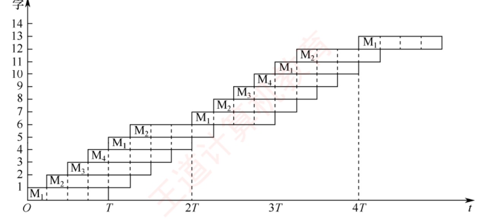
习题 24 配图（原书 p.94）——本章最难的一道选择题 ：四体低位交叉，① 每轮读 6 个字重复 80 次、② 每轮读 8 个字重复 60 次，问耗时之比。图中横轴 O/T/2T/3T/4T，注意相邻两轮之间那一段"等 M1 空出来"的空白 。
我的补讲 · 习题 24 拆成两句话就不难了（配合上图看）
书上给的两步 ：1 时它才用了 T/2 ，还得再等 T/2 ⟹ 一轮的"步进"是 2T 。最后一轮 要算到第 6 个字读完：(6−1)×(T/4) + T = 2.25T 。总时间 = (80−1)×2T + 2.25T = 160.25T 。1 恰好过了 T 可立即再用 ⟹ 步进仍是 2T。最后一轮 (8−1)×(T/4) + T = 2.75T 。总时间 = (60−1)×2T + 2.75T = 120.75T 。C. 4:3 。书上的注意框 ：进入下一轮不需要第 6 个字读取结束，第 5 个字读取结束时 M1 就已空出，即可马上进入下一轮。 我复算过：160.25 / 120.75 = 1.3271，而 4/3 = 1.3333，并不严格相等 ——选项取的是最接近值 。考场上算到 160.25T 与 120.75T 就可以直接挑最近的选项，不要因为除不尽而怀疑自己算错。套路提炼 ：「(轮数−1) × 步进 + 最后一轮的完整时间」 ，其中步进 = ⌈每轮字数 / m⌉ × T 取"整轮"，最后一轮 = (每轮字数−1) × (T/m) + T 。
必记结论 · 同时启动方式（2017、2022 两道真题的公共前提）
当所有存储模块一次并行读/写的总位数恰好等于存储器数据总线宽度 时，采用同时启动方式。8 个 16M×8 位的 DRAM 芯片构成 128MB 内存条 ，每片内部为 4096×4096×8 位（行、列地址各 12 位，8 个位平面）。单片每次传 8 位，8 片同步工作一次提供 64 位 ，匹配 64 位总线。并行访问以连续 8 字节为单位进行 ，即每次读取的数据只能来自地址对齐的块 （0~7、8~15、…、8k~8k+7）。若访问一个 int（4B）时起始地址未对齐（如地址 6，占第 6~9 单元，横跨两块）则需两次访问；若按 4 字节对齐则一次完成。这正是内存访问要求数据对齐的根本原因。
知识串联 · 边界对齐：ch2 埋的伏笔在这里收口
ch2 2.3.4 讲"按边界对齐存储"时只说了"不对齐要访问两次" 这个结论；这里给出了硬件原因 ——内存条一次只能吐出一个对齐的 8 字节块 ，跨块就必须再来一轮。两章合起来才是完整的一句话。 本章 3.6 2025 真题（3.6 综 09）的唯一机关就是"数组起始地址未对齐" ：一处设定同时让 Cache 块数 128→129、页数 2→3。凡题目给出数组起始地址，第一件事是查它对齐到哪一级边界。 操作系统 结构体成员的对齐填充、malloc 返回地址的对齐保证，同一件事。三道题串成一串 ：3.2-28（x 在 ...0000H 一次、y 在 ...1006H 两次）· 3.2-35（2017 真题） （32 位总线、double 在 804 001AH，低两位 = 10 ⟹ 占 3 行 ⟹ 3 个存取周期 ，🐍 复算 ✔）· 3.6 综 09（2025）。
陷阱 · 2017 真题为什么是 3 而不是 2——"同时启动"下一次只读一行
题目 ：主存按字节编址，4 个 64M×8 位 DRAM 交叉编址，总线宽 32 位，每次最多读/写 32 位；double 变量 x 在 804 001AH，读 x 要几个存取周期？先判方式 ：4×8 = 32 位 正好等于数据总线宽度 ⟹ 同时启动。一个存取周期读所有芯片的同一行，共 4 个字节。 再切地址 ：0x1A = 26，26 % 4 = 2 ⟹ 从 2 号芯片开始；double 占 8 字节 = 第 26~33 号单元，落在 24–27 / 28–31 / 32–35 三行 ⟹ 3 个存取周期 （🐍 复算 ✔）。采用同时启动方式时，一次读行也许会有没用的数据读入 （这里第一行读了 24、25 两个没用的字节）。3.2-28 ：那题总线 64 位、8 片，块是 8 字节；本题总线 32 位、4 片，块是 4 字节 。"块有多大"由总线宽度决定，不是固定 8 字节。
我的补讲 · 3.2 里剩下的几道"只考一句话"的题，一次清掉
习题 26 单体多字存储器 ：每个存储单元存多个字，解决的是访存速度问题，不解决容量太小 ；指令与数据连续存放才有效，过多转移指令会严重影响其效率 （因为一次取来的多个字白取了）。习题 27 为什么多模块能提速 ：不是因为器件快、也不是因为预读，而是各模块有独立的读/写电路 ，能真正并行。⚠️ 顺带否掉 D 项：低位交叉编址的多模块存储器，各单元地址不连续 。习题 28 / 综合 04 ：高位交叉起不到提速作用 ，书上给的理由是"不符合程序运行的局部性原理" ——连续读出彼此相差一个存储体容量的 4 个字，机会太少，通常只有一个模块在忙。综合 04 的另外两问 ：单体 4 字宽度 ——一次读 4 个字，提高平均读写速度，但灵活性不如多体单字结构 ，还要多用几个缓存寄存器；多端口存储器 ——对同一存储体使用多套读/写电路，扩容难度大于多体结构 ，且不能对同一存储单元同时执行多个写入 ，而多体结构允许同一存取周期对几个存储体同时写。综合 01 刷新存储器带宽 ：⭐ 刷新带宽 = 分辨率 × 颜色深度 × 刷新频率 = 1024×768×3B×72/s = 169869 KB/s；只占总带宽 50% ⟹ 总带宽 = 339.738 MB/s （🐍 复算 ✔）。⚠️ 本题 1K = 1000 ，书上专门加括号提醒。提升手段四条：高速 DRAM 芯片 / 多体交叉 / 内部总线宽度加倍 / 双端口存储器把刷新端口与更新端口分开 。
知识串联 · 综合 01 那道"刷新存储器"其实是 ch7 的显存题，提前在这里考了
ch7 I/O "刷新存储器 "就是显存（VRAM） ，"刷新屏幕"就是显示控制器按刷新频率不断把整屏像素读出去。它是本章唯一一道以 I/O 设备为背景的带宽题 ，公式 带宽 = 分辨率 × 颜色深度 × 刷新频率 在 ch7 讲显示设备时会原样再出现。本章 3.2 它给出的四条提速手段，正好是本节讲过的东西的清单 ：高速 DRAM（3.2.1）、多体交叉 （3.2.3）、内部总线宽度加倍（位扩展的思路）、双端口存储器 （把"刷新"和"更新"两个访问者分开，避免抢带宽）。ch6 总线 "多个功能部件争用同一存储器带宽"就是总线竞争 的雏形；ch6 会给它一个正式名字叫总线仲裁 。单位再提醒一次 ：这道题 1K = 1000 （书上加括号写明），算出 339.738 MB/s ；若按 1024 算就对不上书答 。
3.3 主存储器与 CPU 的连接 ⭐ 5 页 6 真题，全章"最快见效"的一节
📄 p.97
3.3.1 连接原理
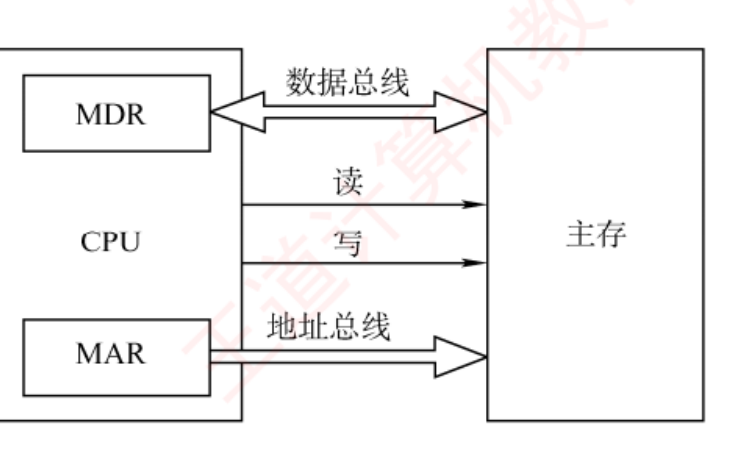
图 3.11 主存储器与 CPU 的连接（原书 p.97）——三组线各司其职 ：MDR ↔ 数据总线（双向）、读/写控制线（单向出）、MAR → 地址总线（单向出）。
主存储器通过数据总线、地址总线和控制总线 与 CPU 相连。⭐ 数据总线的位数与其工作频率共同决定数据传输速率，其乘积正比于理论带宽 ；⭐ 地址总线的位数决定了 CPU 可寻址的最大内存空间 。
由于单个存储芯片容量有限，实际系统中需通过存储器扩展技术 将多个芯片集成在内存条 上，并结合主板上的 ROM ，共同构成计算机所需的主存空间，再经由系统总线与 CPU 连接。
必记结论 · 控制线因存储器类型而异（这条很少有人注意，是 3.3 的隐藏考点）
SRAM 芯片 ：通常包含片选 和读/写控制 信号线。ROM 芯片 ：仅需片选线 （只读，不需要写控制）。DRAM 芯片 ：一般不设独立片选线 ，其芯片选择可通过行/列地址选通（RAS /CAS ） 或外部译码逻辑实现。
3.3.2 主存容量的扩展
📄 p.97–99
考点追踪：字扩展（或字位扩展）后存储芯片的地址范围（2010、2016）
当单个存储芯片的字数 （存储单元数量）或字长 （每个存储单元的位数）无法满足实际主存需求时，需要在位 和字 两个方向进行扩展。
1. 位扩展法
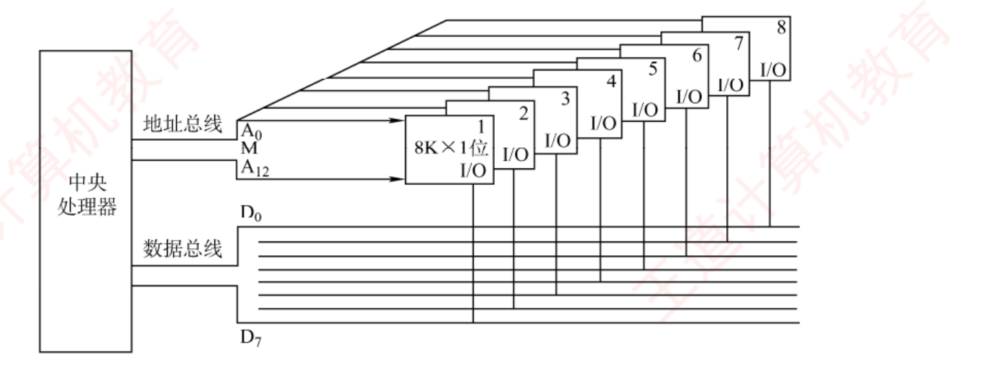
图 3.12 位扩展连接示意图（原书 p.98）——8 片 8K×1 位构成 8K×8 位 ：地址线 A0 ~A12 全部并联 （8 片同时收到同一个地址），每片的 I/O 各接数据总线的一位 。
用途 ：增加存储字的长度 ，适用于 CPU 数据总线宽度 > 单个芯片数据位宽 的情况，通过并联 多个芯片使总数据位宽与 CPU 总线匹配。⭐ 连接方式 ：各芯片的地址线、片选线和读/写控制线并联 接至系统对应总线；数据线单独引出 ，分别连接到系统数据总线的不同位。所有芯片同时工作，共同提供一个完整字。
2. 字扩展法
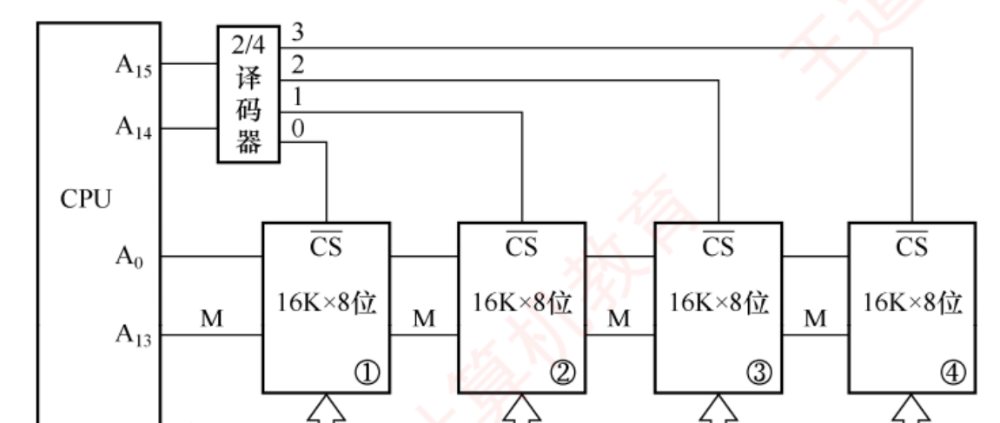
图 3.13 字扩展连接示意图（原书 p.98）——4 片 16K×8 位构成 64K×8 位 ：数据线 D0 ~D7 全部并联，A15 A14 经 2/4 译码器产生 4 个片选信号 CS ，同一时刻只有一片被选中。
用途 ：增加存储单元的数量 （扩大地址空间），而存储字的位数已满足系统要求。此时系统数据总线宽度 = 芯片数据位宽 ，而地址总线位数 > 芯片地址线位数 。⭐ 连接方式 ：各芯片的地址线连接至系统地址总线的低位 ；数据线和读/写控制线并联 至系统总线；系统地址总线的高位经译码器生成片选信号，分时选中不同芯片 。各芯片分时工作。
书例的地址分配（16 位地址，高两位就是片号 ）：
芯片 最低地址 最高地址 第一片 00 0000000000000000 11111111111111第二片 01 0000000000000001 11111111111111第三片 10 0000000000000010 11111111111111第四片 11 0000000000000011 11111111111111
3. 字位同时扩展法
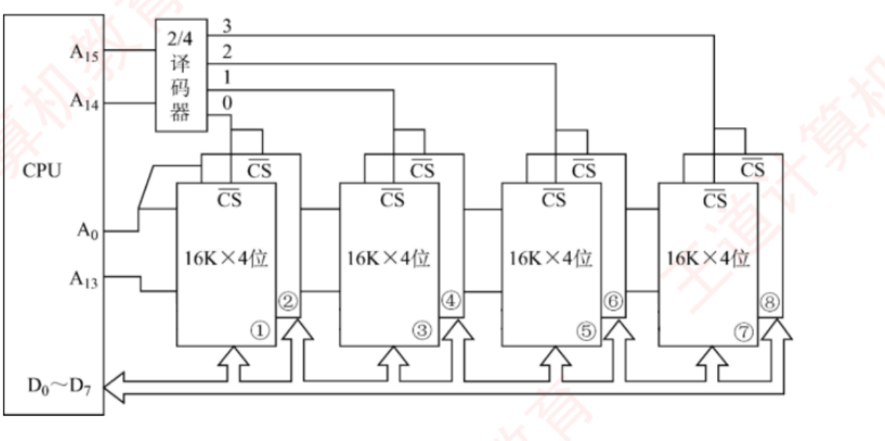
图 3.14 字位同时扩展及 CPU 的连接图（原书 p.99）——8 片 16K×4 位构成 64K×8 位 ：每 2 片一组做位扩展 （组内两片的 CS 接同一个片选信号、同时工作），4 组之间做字扩展 （A15 A14 经译码器分时选组）。看这张图只需盯一件事：片选信号是"两片共用一根"。
用途 ：芯片的字长和容量均不足 时，需同时进行位扩展和字扩展。该方法将位扩展后的芯片组视为一个逻辑单元 ，再对这些单元进行字扩展。⭐ 连接方式 ：先将若干芯片按位扩展方式组成一组 （满足字长要求）；再将多组按字扩展方式连接 ——系统地址线低位 接各组内部芯片的地址引脚，高位经译码器 生成各组的片选信号。
必记结论 · 三种扩展法的判定表（缺什么 → 用什么 → 线怎么接）
缺什么 用什么 芯片间地址线 芯片间数据线 片选 字长不够 （位数少）位扩展 并联 （全部共用）各自引出 接总线不同位并联 （同时选中）单元数不够 （容量小）字扩展 低位并联 并联 高位译码，分时选中 两者都不够 字位同时扩展 组内并联 组内各自引出 组间高位译码
一句话记法：位扩展"同时上"，字扩展"轮流上"，字位扩展"先组队再轮流"。
我的补讲 · 一眼判定"该用哪种扩展"：只比两次，不用想
书上说 ：位扩展用于
CPU 数据总线宽度大于单个芯片数据位宽 ；字扩展用于
地址总线位数多于芯片地址线位数 。
潜台词是 ：
三种扩展的选择不是"看题目要多大"，而是两次独立的比较 ——
比字长 ：系统每单元位数 ÷ 芯片字长，商 > 1 ⟹ 要位扩展 ，商就是每组几片 。
比单元数 ：系统单元数 ÷ 芯片单元数，商 > 1 ⟹ 要字扩展 ，商就是几组 。
片数 = 每组片数 × 组数 ；片选译码器的输入位数 = log2 (组数) 。
所以能考 Z ：
3.3 综 01 就是这三步的标准演示——512K×8 组 4M×32：字长 32÷8 =
4 片一组 ，单元数 4M÷512K =
8 组 ，共
32 片 ，译码器是
3/8 。
2009 真题 的 RAM 部分同理：4K×4 组 60KB（按字节编址）⟹ 8÷4 = 2 片一组、60K÷4K = 15 组 ⟹
30 片 。
⚠️ 两次比较
必须在同一编址口径下做 ——先把系统容量写成
单元数 × 每单元位数，再开始除。
3.3-02 与 2021 真题栽的都是这一步。
我的补讲 · 地址范围题的三个手上功夫（练熟了这一节就是送分）
① 十六进制直接相减，别转十进制。 43FFH − 4000H + 1 = 400H = 1K（习题 07）；CFFFFH − 90000H + 1 = 40000H = 256K（习题 08）；5FFFH − 4000H + 1 = 2000H = 8K（2016 真题）。记住 400H = 1K、1000H = 4K、2000H = 8K、10000H = 64K，一眼就出。 ② 首地址 = 片号 << 片内地址位数；末地址 = 首地址 + 片内容量 − 1。 111 + 片内 15 位 ⟹ 首 38000H、末 3FFFFH（🐍 复算 ✔）。末地址一定是"低位全 1"，写出来自检一眼就知道对不对。 ③ 从顶往前数（2023 真题的做法）。 00000000H ~ 3FFFFFFFH；ROM 占 1/4 = 228 且在高地址 ⟹ 从 3FFFFFFFH 往前数 228 个 ⟹ 30000000H ~ 3FFFFFFFH（🐍 复算 ✔）。选项 A/B/D 全是"从 0 往后数"或"位数凑错"的产物 ——题目说了"ROM 在高地址区"，就必须从顶端起算。
背景 · 考试不碰：三张连接图的引脚走线细节
图 3.12/3.13/3.14 里每一根线具体连到哪个引脚 ，统考从不要求画图或识图 ——408 考的是算片数、算地址范围、判断该用哪种扩展 。只需各留一个印象 ：位扩展"地址线并联、数据线分开"、字扩展"数据线并联、高位译码"、字位扩展"组内并联组间译码"。把上面那张判定表背下来，图就可以合上了。
3.3 的三道公式与六道真题
📄 p.99–102
真题密度：6 道统考真题（2009、2010、2011、2016、2021、2023）——3.3 是纯计算节，几乎年年考
必记结论 · 芯片数计算的唯一一条公式链（3.3 的绝对主场）
① 地址范围 → 单元数 ：末地址 − 首地址 + 1（十六进制直接相减，别转十进制 ）。
② 单元数 → 总位数 ：总位数 = 单元数 × 每单元位数。每单元位数由"编址单位"决定 ——按字节编址就是 8，按字编址就是字长。
③ 总位数 ÷ 单片位数 = 片数 ：片数 = 总位数 ÷ (单片字数 × 单片字长)。
⭐
整条链只有三个变量会变 ：
编址单位 （字节/字）、
ROM 区扣不扣 、
片选取高位还是低位 。
2009 / 2016 / 2021 三年考的是同一道题的三个变形。
我的补讲 · 六道真题按"机关"分类，一次看穿
书上说 ：这些题都是"用若干芯片组成某容量存储器，问片数/地址范围"。
潜台词是 ：
题面越长，机关越少——每道题只藏一个变量 。把六道真题的机关抽出来排成一列，你会发现它们从不重复：
年份 题面 唯一机关 答案 2009 64KB 主存含 4KB ROM，用 2K×8 ROM + 4K×4 RAM ROM 与 RAM 分开算 ；RAM 区 = 60KBROM 2 片、RAM 30 片（🐍 ✔） 2010 2K×4 组成 8K×8，问 0B1FH 所在芯片最小地址 连续编址 ：2 片一组共 4 组，组内并联 0800H （第二组 0800H~0FFFH）2011 地址空间 64MB，实装 32MB，问 MAR 位数 实装容量是干扰项 26 位 （不是 25）2016 64KB，4000H~5FFFH 为 ROM，用 8K×4 SRAM 问的是 SRAM 片数，ROM 区不算 ROM 区 8KB ⟹ RAM 56KB ⟹ 14 片 （🐍 ✔） 2021 000000H~3FFFFFH 为 RAM，按字编址、字长 32 位 "按字编址"四个字 222 ×32b ÷ (219 ×8b) = 32 片 （误当字节编址会得 8） 2023 30 根地址线，RAM:ROM = 3:1，RAM 在低地址 先定顶地址再往前数 空间 0~3FFFFFFFH，ROM = 228 ⟹ 3000 0000H~3FFF FFFFH
所以能考 Z ：做 3.3 的题，
动笔前先问三句 ——「
按什么编址？ 」「
题目问的是全部芯片还是某一类？ 」「
地址范围要不要先减一次？ 」。这三句问完，剩下的就是除法。
陷阱 · 3.3 习题里三个"读题就丢分"的地方
① 习题 02（80386DX） ：以 4B 为编址单位 ，用 8K×8 的芯片构造 32KB 存储体 ⟹ 32KB ÷ 4B = 8K 个单元，单元数没变 ，只是每单元从 8 位变成 32 位 ⟹ 只需位扩展 。若按字节编址，答案就变成字扩展了。 习题 06 ：地址总线写成 A0 （高位）~ A15 （低位） ——编号是反的 。接芯片的是低 12 位即 A4 ~A15 ，所以译码器输入是高两位 A2 A3 ，不是 A14 A15 。凡题目特意标注"高位/低位"，一定是在设这个陷阱。 习题 03 的书上补充 ：4 个 16K×8 位芯片总容量 64KB，不能设计成 128K×4 位 ——位只能变宽不能变窄 ，芯片本身是 8 位，拆不成 4 位。习题 09 ：片选地址 3 位 + 片内 15 位（32K）= 18 位总地址 ，片选 111 ⟹ 首地址 38000H、末地址 3FFFFH（🐍 复算 ✔）。"首地址 = 片号 << 片内位数"，末地址 = 首地址 + 片内容量 − 1。
知识串联 · "高位译码选片"这个动作 = "地址切分"，本章后面全靠它
本章 3.5 Cache 地址划分 ：标记｜行号｜块内地址——和"片选｜片内地址"是同一种切法 ，只是名字换了。做 3.3 的地址范围题时练出来的"切位手感"，到 3.5 可以直接用。本章 3.6 虚拟地址切分 ：虚页号｜页内偏移，再切成多级页表的一级页号｜二级页号｜偏移，同一种切法的三层嵌套。ch4 指令系统 指令格式的操作码｜地址码切分、扩展操作码 的变长切分，还是同一件事。408 组原有一半的计算题，本质都是"给你一串位，问你哪几位干什么" 。3.3 是这套手感最便宜的练习场——它没有 Cache 那些额外概念，纯切位 。
我的补讲 · 3.3 综合 01 把"按字编址"的后果讲得最透
题目 ：用 512K×8 位的 Flash 芯片组成 4M×32 位 的只读存储器，按字编址 。书上的关键一句 ：存储器是按字编址的，所以此时不需要将存储器的容量先转换成 16M×8，直接是 4M×32 位中的 4M，所以只需要 22 根地址线 。潜台词是 ："按什么编址"决定了"一个地址对应多少位"，从而决定地址线根数 。按字节编址时 4M×32 位 = 16MB 要 24 根；按字编址只要 22 根 。片数 ：位扩展 4 片（512K×8 → 512K×32）× 字扩展 8 组 = 32 片 （🐍 复算 ✔）。地址线分工 ：A0 ~A18 （19 位）选片内单元（512K = 219 ）；A19 ~A21 （3 位）经 3/8 译码器 选 8 组之一。书上特意点明 ：此时不需要指定 A0 、A1 来标识每组中的 4 片，因为按字寻址时 4 片每次都是一起取的 ——位扩展的那 4 片是"同时上"的，不占任何地址位 。这句话是"位扩展不消耗地址线"的最好注脚。
3.4 外部存储器
📄 p.102
考点追踪：磁盘存储器的相关概念（2019）；磁盘存取时间的计算（2013、2015、2022）；磁盘地址结构的计算（2022）；提高 RAID 可靠性的措施（2013）
3.4.1 磁盘存储器
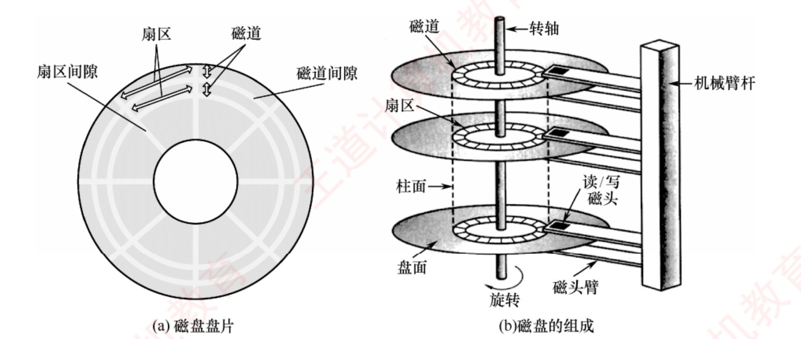
图 3.15 磁盘驱动器示意图（原书 p.103）——(a) 单张盘片上的磁道 （同心圆）与扇区 （扇形），以及它们之间的间隙 ；(b) 多盘片叠起来后，各盘面上编号相同的磁道构成一个"柱面" 。四个词的空间关系纯文字讲不清，这张图必须看一眼。
必记结论 · 五个名词一次定死（2019 真题一题串起四个）
磁盘存储器 = 磁盘驱动器 + 磁盘控制器 + 盘片 （三件套，2019 真题的 D 项）。磁盘驱动器 驱动盘片旋转并让磁头读/写；磁盘控制器 是驱动器与主机之间的接口 ，接收解析 CPU 命令、发控制信号、监控状态。记录面数 = 磁头数 （一个盘面一个磁头，盘面号就是磁头号 ）；柱面数 = 单面上的磁道数 ；所有记录面上相同编号的磁道构成一个柱面 ；扇区数 = 每条磁道的扇区数量 。扇区是磁盘读/写的最小单位 （2019 真题的错误项正是"最小读/写单位为 1 字节"）。扇区按固定圆心角度划分 ，导致从外到内位密度逐渐增高，磁盘的存储能力受限于最内圈的最大记录密度 。
我的补讲 · "盘面号 = 磁头号"这条等式，是习题 02 的唯一考点
书上说 （习题 02 解析）：因为每个盘面对应一个磁头，所以盘面号和磁头号是同一个概念。 潜台词是 ：磁盘地址的三个字段是"哪一圈 / 哪一层 / 哪一格"，三者互不重复 。选项写成"磁头号、盘面号和扇区号 "看着像三个字段，其实前两个是同一个东西说了两遍，而真正的"哪一圈"（柱面号）被漏掉了 。所以能考 Z ：这类题不考计算，考的是你能不能一眼看出字段重复/缺失 。正确的三字段永远是：柱面（磁道）号 ｜ 盘面（磁头）号 ｜ 扇区号。
柱面（磁道）号换它最慢：要移动机械臂
盘面（磁头）号换它很快：电子切换
扇区号转过去即可
我的补讲 · 磁盘地址为什么是"柱面号在最高位"——书没说透，但 2022 真题在考
书上说 ：磁盘地址由柱面号、盘面号、扇区号 三部分组成；书例 16 个盘面 × 256 个磁道 × 16 个扇区 ⟹ 柱面号 8 位、盘面号 4 位、扇区号 4 位，共 16 位 （🐍 复算 ✔）。潜台词是 ：字段顺序不是随便排的，它编码了"三种切换的代价排序" ——换柱面要移动机械臂 （毫秒级，最贵），换盘面只需电子切换磁头 （几乎免费），换扇区只需等盘转过去 。把最贵的放最高位，连续的逻辑地址就会优先在同一柱面内展开，能不寻道就不寻道。 所以能考 Z ：2022 真题 直接问地址结构的位数分配——按 log₂ 分别算即可；综合 01 第 3 问 「长度超过一个磁道容量的文件记录在同一柱面上是否合理」⟹ 合理，因为不需要重新寻道 ——这就是上面那句话的直接应用；操作系统 的磁盘调度算法（SSTF、SCAN）优化的也正是这一项。
必记结论 · 磁盘性能指标的三条公式（全部进公式手册）
① 记录密度 ：
道密度 （沿半径方向单位长度上的磁道数，道/cm）、
位密度 （单条磁道单位长度上的位数，bit/cm）、
面密度 = 位密度 × 道密度 。
② 容量 ：
非格式化容量 ＝ 记录面数 × 柱面数 × 每磁道磁化单元数
格式化容量 ＝ 记录面数 × 柱面数 × 每道扇区数 × 每扇区字节数
⭐
非格式化容量 ＞ 格式化容量 ——格式化要预留扇区间隙、同步字段等开销（2019 真题 A 项、习题 01 C 项都考这条）。
③ 数据传输速率 ：若转速为
r 转/秒 、单磁道容量为
N 字节 ，则 ⭐
Dr = r × N 。
必记结论 · 存取时间的"四项式"（2013、2015 两道真题的通用模板）
总响应时间 ＝ 排队延迟 ＋ 控制器时间 ＋ 寻道时间 ＋ 旋转等待时间 ＋ 数据传输时间
后三项合称
存取时间 ，是衡量磁盘性能的核心指标。
寻道时间 ：磁头移动到目标磁道的时间，
平均寻道时间通常取最大寻道时间的一半 。
旋转等待时间 ：⭐
平均旋转等待时间 = 磁盘旋转半周的时间 。
数据传输时间 ：读/写一个扇区的时间 =
转一圈的时间 ÷ 每道扇区数 。
我的补讲 · 磁盘时间题的四步流程 —— "题目给什么就加什么" 是唯一的坑
书上说 ：总响应时间包含排队延迟与控制器时间，但"存取时间"只含后三项。
潜台词是 ：
题干给了哪几项，你就加哪几项——多加一项和少加一项一样错。 两道真题就是这么区分的：
题 给的条件 算式 答案 2013 （3.4-09）10000 转/分、平均寻道 6ms、传输率 20MB/s、控制器延迟 0.2ms 、扇区 4KB 3（半周）+ 6（寻道）+ 0.2（传输）+ 0.2（控制器） 9.4ms 2015 （3.4-11）7200 转/分、平均寻道 8ms、每道 1000 扇区，没给控制器延迟 4.17（半周）+ 0.01（传输）+ 8（寻道） 12.2ms
四步流程（照着做，一步不漏） ：
转一圈的时间 = 60 ÷ 转速(转/分) 秒 —— 先把"转/分"换成"每转多少毫秒"。10000 转/分 ⟹ 6ms；7200 转/分 ⟹ 8.33ms。
平均旋转等待 = 上一步 ÷ 2（半周）。
传输时间 = 转一圈时间 ÷ 每道扇区数；若题目给的是传输速率，就用"扇区大小 ÷ 速率" （2013 那题就是这么给的）。
把题目明确给出的项全部相加 ——寻道、旋转、传输一定有；控制器延迟、排队延迟只在题给时才加 。
🐍 我复算过 2015 那题：传输时间实为
8.333/1000 = 0.00833ms，
书上写成 0.01ms 是四舍五入 ，总时间 12.175ms ≈ 12.2ms，
不影响选项 。
陷阱 · 习题 08：间隙不载数据，但磁头照样要转过去
题目 ：200 个磁道、盘面总容量 60MB、旋转一周 25ms、每磁道 8 个扇区，各扇区之间有间隙，磁头通过每个间隙需 1.25ms ，问磁盘接口所需最大传输速率。0.3MB ；真正读数据的时间 = 25ms − 1.25ms × 8 = 15ms ；速率 = 0.3MB ÷ 15ms = 20MB/s （🐍 复算 ✔）。机关在分母 ：若直接用 25ms 会得 12MB/s（不在选项里），若忘了除以磁道数会得 60MB/s（选项 B 就在那等你）。"接口所需最大速率"问的是数据真正流过的那一段有多快 ，间隙那段没有数据流过，不能算进去。
我的补讲 · 习题 04 一题四个选项，正好是"存取时间三段式"的最佳记忆卡
题目 ：若磁盘转速提高一倍，则……逐项过一遍，四个选项各钉一个知识点 ：A. 平均寻道时间减少一半 ❌ —— 寻道是机械臂径向移动，与盘片转速无关 。B. 存取速度也提高一倍 ❌ —— 存取时间是三项之和 ，只有其中两项（旋转等待、传输）减半，寻道那一项没变，总和减不到一半 。C. 平均旋转等待时间减少一半 ✔ —— 它等于转半周的时间 ，转速翻倍就减半。D. 不影响磁盘传输速率 ❌ —— Dr = rN，r 翻倍则速率翻倍。潜台词是 ："寻道"和"旋转"是两套完全独立的机械动作 ——一个是磁头臂径向移动 ，一个是盘片旋转 。凡题目改动其中一个参数，先问"它动的是哪一套" ，另一套一律不受影响。所以能考 Z ：这是 3.4 出选择题最省事的角度，把 A/B/C/D 四句当四张卡片背下来 。
知识串联 · 磁盘的每一个性能项，在《操作系统》都有一整节在优化它
操作系统 磁盘调度算法 （FCFS / SSTF / SCAN / C-SCAN）优化的是寻道时间 ——因为它是三项里最贵且唯一可以靠"排顺序"省下来 的一项。操作系统 减少延迟时间 的手段（交替编号、错位命名）优化的是旋转等待 ；文件的连续分配 / 簇（块）的选择 优化的是寻道 + 传输 。操作系统 磁盘高速缓存（Disk Cache） ——书这里也讲了：在内存中开辟空间暂存待写数据，磁盘以"簇"（若干连续扇区）为单位写 ，缓存可减少频繁小块写入。这就是 OS 里的缓冲区/页高速缓存。 本章 3.5/3.6 "一次搬一整个扇区/簇" 与 Cache 搬一整行、虚存搬一整页是同一个赌注（局部性）。408 里磁盘出现两次：组原算时间，OS 排顺序。两边合看，才知道为什么 OS 那么在意寻道。
3.4.2 磁盘阵列 RAID
📄 p.104
RAID（独立冗余磁盘阵列） ：将多个独立的物理磁盘组合成一个逻辑磁盘，数据在多个物理盘上交叉分割存储并并行访问 ，从而获得更高的存储性能、可靠性与安全性。在 RAID1~RAID5 中，任意磁盘故障时可随时拔出损坏磁盘并插入新盘，系统仍能恢复或维持数据完整性。
必记结论 · RAID0~RAID5 六个级别（只需记住"关键词"）
级别 关键词 买到了什么 RAID0 无冗余、无校验 （条带化）容量 + 速度，零容错 RAID1 镜像 可靠性，代价是有效容量减半 RAID2 海明码 纠错可靠性 RAID3 位交叉 奇偶校验可靠性 RAID4 块交叉 奇偶校验可靠性 RAID5 无独立校验盘 的分布式奇偶校验可靠性 + 避免校验盘成为瓶颈
RAID0 把连续的多个数据块交替存放在不同物理磁盘的扇区中，即
条带化技术 ，
扩展容量、提高存取速度，但不具备容错能力 。
RAID1 用两个磁盘同步读/写、互为镜像，一盘故障可从另一盘完整读取。
陷阱 · RAID 的两条"看着对其实错"（2013 真题 + 习题 01）
① 条带化是"提速"不是"提可靠" （2013 真题 ）：提高 RAID 可靠性 的措施只有磁盘镜像 与奇偶校验 两项；条带化没有冗余，一块盘坏了数据就丢 ；增加 Cache 机制 同样与可靠性无关。RAID 不提高磁记录密度，也不提高磁盘利用率 （习题 01 的 B 项）：RAID 只是把多个物理盘组织 成一个逻辑盘，盘片上怎么记录一个字节没有任何变化 ；而 RAID1 反而让利用率降到 50% 。条带化 = 快；镜像/校验 = 稳。RAID 从不改变盘本身。
知识串联 · RAID 的四种手法，你在别的章节都单独学过
本章 3.2 条带化 = 低位交叉编址 ：把连续的块摊到不同设备上并行访问，连"提高吞吐但不提高单次延迟"这一点都一样 。ch2 数据校验 奇偶校验、海明码 ——RAID2/3/4/5 用的就是 ch2（部分教材放在数据的表示）里那套校验码，只是把"一个字的各位"换成了"各个盘的对应位" 。计算机网络 链路层的差错控制 （奇偶校验 / CRC）是同一套思路的另一处应用。"用冗余换可靠、用并行换速度"是全 408 通用的两把锤子 ；RAID 只是把它们同时用在磁盘上。
3.4.3 固态硬盘 SSD
📄 p.104–105
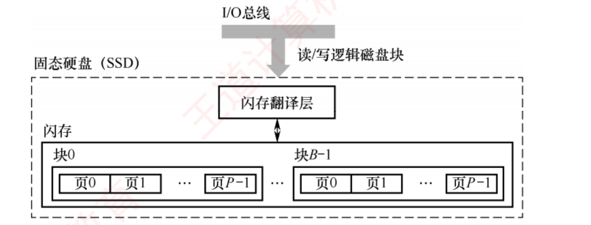
图 3.16 固态硬盘（SSD）结构组成（原书 p.105）——看两件事 ：① 闪存翻译层 夹在 I/O 总线与闪存之间，把"读/写逻辑磁盘块"翻译成对物理闪存的操作，它代替了磁盘控制器的角色 ；② 闪存是"块 → 页"两级结构 ，这正是"读写以页、擦除以块"的物理依据。
必记结论 · SSD 的三条硬指标（习题 05/06 直接考）
结构 ：一个 SSD = 一个或多个闪存芯片 + 闪存翻译层 ；⭐ 闪存翻译层相当于代替了磁盘控制器的角色 。两级结构 ：一个闪存芯片由 B 个块 组成，每个块包含 P 页 。页的大小 512B~4KB ，每块 32~128 页 ，块的大小 16KB~512KB 。读/写操作以"页"为单位；擦除操作以"块"为单位。只有在整块被擦除后，才能向其中的页写入新数据。 随机写慢的两个原因 ：① 擦除耗时长 ，通常比页访问慢一个数量级；② 若要修改一个已含有效数据的页 Pi ，必须先把该块中所有有效页复制到一个新的（已擦除的）块，再写 Pi 。优点 ：无机械运动部件 ⟹ 随机访问延迟极低 ，且无噪声、无振动、功耗低、抗震性强。
我的补讲 · "读写以页、擦除以块"一句话，同时解释了 SSD 的全部缺点
书上说 ：
读/写以页为单位，擦除以块为单位；只有在整块被擦除后，才能向其中的页写入新数据。
潜台词是 ：
写的粒度（页）比擦的粒度（块）小一个量级，两者对不齐——SSD 所有的怪毛病都是这个错配的后果 ：
后果 推导 对应考点 随机写特别慢 改一页要搬走整块的有效页 + 擦整块 + 写回 习题 05 C 项、习题 06 C 项 写比读慢很多 读只需读一页；写可能连带一次块擦除 3.2 的 Flash 读/写不对称 有寿命上限 擦除次数有限（几百~几千次），而每次小写都可能触发擦除 习题 05 D 项 需要磨损均衡 写集中在少数块 ⟹ 局部先坏 ⟹ 整盘报废 下面的蓝块
所以能考 Z ：习题 05 的错误项就是把"擦除"说成
以页为单位 ——
这一个字改了，上面整张因果链就全塌了 。
记"页读写、块擦除"六个字即可。
⚠️ 习题 06 的错误项是"
常用作主存 "——
SSD 是外存 ，别被"速度快"带跑。
我的补讲 · 磨损均衡：动态 vs 静态，差别只在"要不要主动搬"
书上说 ：动态磨损均衡——写入时优先选择擦写次数较少的空闲块；静态磨损均衡——即使没有新数据写入，控制器也会定期扫描并自动进行数据迁移。 潜台词是 ：动态只管"新来的写往哪放"，静态还管"老数据赖着不动怎么办" 。为什么需要静态？因为只读不写的冷数据会长期霸占一批低磨损块 ，让写请求被挤到剩下那几块上反复磨——动态均衡对这种情况无能为力 。静态的做法是把冷数据搬到高磨损块上去养老 ，把低磨损块腾出来接写请求。所以能考 Z ：选择题只会问"哪个更高级/哪个需要主动迁移" ⟹ 静态 。256GB × 500 次 = 125TB ；若每天写 10GB，需 12800 天 ≈ 35 年 （书说"三十多年"）✔。这个数字的意义是：SSD 的寿命焦虑在消费场景下基本不成立，前提是磨损均衡在工作。
知识串联 · SSD 与磁盘的"三件套"一一对应，记一边就等于记了两边
本章 3.4.1 磁盘控制器 ↔ 闪存翻译层 （都是"把逻辑块请求翻译成物理操作"的那一层）；扇区 ↔ 页 （最小读写单位）；簇 ↔ 块 （成批操作的单位）。本章 3.6 闪存翻译层做的事——把逻辑块号映射到物理位置，并且映射会变 ——和页表把虚页号映射到物理页框 是同一种机制（都是一层可变的间接映射 ）。理解了页表，就理解了 FTL。操作系统 文件系统的块分配 、TRIM 指令 、SSD 上"为什么不建议做碎片整理"，全都源自"擦除以块为单位"这一条。408 里 SSD 只考概念不考计算 ，但它的概念全是从别处搬来的——用对应关系记，比单背省一半力气 。
背景 · 考试不碰：磁记录原理与编码方法
磁记录原理 ：磁头与磁性记录介质发生相对运动时，通过电磁转换 实现读/写；编码方法 ：按特定规则把二进制序列转换为磁层中的磁化翻转状态序列 。从不考具体编码方式 （调频制 FM、改进调频制 MFM 等在 408 考纲外）。这两段读一遍知道"磁记录靠磁化方向"即可 ，本节的分值全部在时间计算 与概念判断 上。
我的补讲 · 综合 01 的五问，是 3.4 的一次全景演练（附我的复算）
题目 ：4 个记录面、内半径 10cm、外半径 15.5cm、道密度 60 道/cm、外层位密度 600bit/cm、转速 6000 转/分。1) 磁道总数 ：有效存储区域 = 15.5 − 10 = 5.5cm ⟹ 每面 60 × 5.5 = 330 道（即 330 个柱面） ⟹ 总数 4 × 330 = 1320 个磁道 。2) 容量 ：外层磁道周长 = 2πR = 2 × 3.14 × 15.5 = 97.34cm ；每道信息量 = 600 × 97.34 = 58404 bit = 7300B ；总容量 = 7300 × 1320 = 9 636 000 B （🐍 复算 ✔）。3) 超过一个磁道的文件放同一柱面是否合理 ：合理 ——不需要重新寻道，读/写速度快 。4) 直接寻址的最小单位 ：一个扇区 ；地址格式 柱面号｜盘面号｜扇区号。5) 平均存取一个扇区的时间 ：6000 转/分 = 100 转/秒 ⟹ 转一圈 10ms ；平均旋转等待 = 5ms ；磁头扫过一个扇区 = 10 ÷ 12 = 0.83ms ；加上题给的平均寻道 10.5ms ⟹ 16.33ms （🐍 复算 ✔）。第 2 问有一处会让人卡住 ：正文说"磁盘存储能力受限于最内圈 "，这里却用最外层位密度乘以全部 1320 道 ——两者不矛盾 ：正文说的是实际格式化容量 （每道等容量，只能按最内圈的极限算），本题算的是非格式化容量的理论上限 。做题按题给口径走，别自己换算法。 第 5 问同样没有控制器延迟与排队延迟 ——再次印证「题目给什么就加什么」。
🚧 本页施工进度 ：
3.1 存储器概述 ✅ 3.2 主存储器 ✅ 3.3 主存与 CPU 的连接 ✅ ｜
3.4 外部存储器 · 3.5 高速缓冲存储器 · 3.6 虚拟存储器 · 3.7 本章小结 施工中 。
题库已全部就绪，可以先去做题：
第 3 章练习（152 题 · 45 道统考真题） 。
王道《计算机组成原理》第 3 章 存储系统 · 精读版 · 408 复盘中心